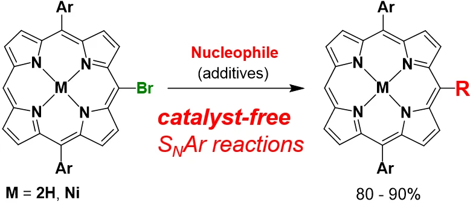
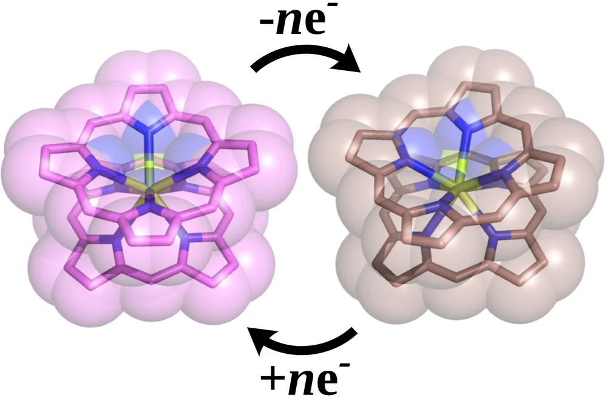
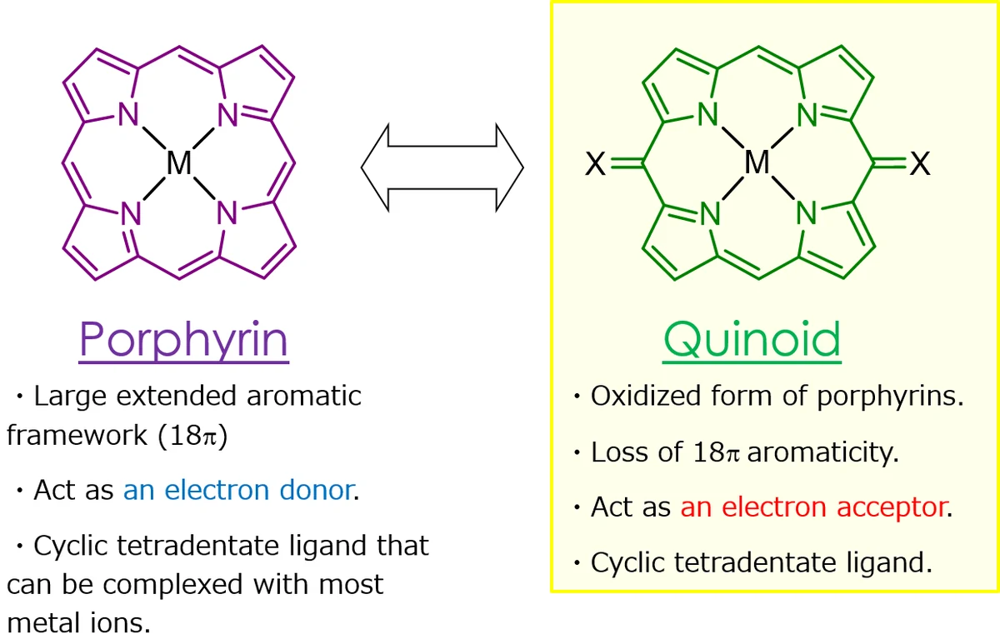
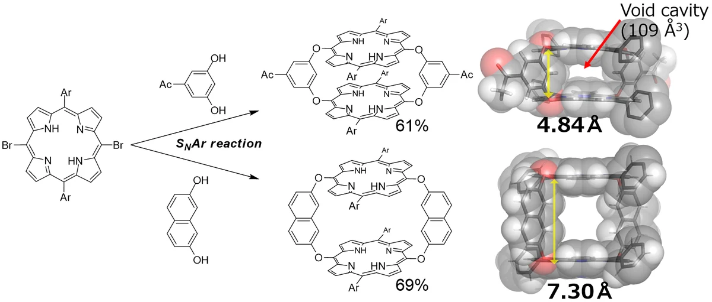
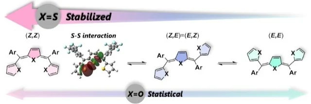

研究紹介 Research
ポルフィリン反芳香族性積層π電子系近赤外吸収酸化還元希土類錯体白金錯体光触媒分子認識光スイッチ
既存の方法では得られないπ電子系を「つくり」、その特異な電子状態から、光・電子・磁気の性質を「引き出す」。
ポルフィリンは、葉緑素や血液中のヘムと同じ骨格をもつ、環状の色素分子です。私は、このポルフィリンとその類縁体(ポルフィリノイド)を共通の土台として、有機化学・錯体化学・超分子化学にまたがる研究を進めています。どのテーマも、次の3つの段階で進めます。
- 1つくる独自の合成手法を出発点に、既存の方法では得られないπ電子系を合成します。
- 2確かめる単結晶X線構造解析、各種分光法、電気化学測定、量子化学計算を組み合わせ、分子の形と性質の関係を分子レベルで明らかにします。
- 3引き出す特異な電子状態から、光・電子・磁気の性質を引き出します。
研究テーマ
基盤となる合成法
- ポルフィリンを自在に修飾する合成法触媒を使わず、温和な条件で原子や官能基を導入する。
特異な電子状態をもつπ電子系
- 反芳香族π電子系不安定な電子状態を、分子設計で安定に取り出す。
- 希土類ダブルデッカー錯体積層したπ電子系の、構造と酸化還元の関係。
- 非芳香族キノイド型π電子系芳香族性をあえて崩したキノイド型分子の、電子状態と性質。
機能への展開
- 白金ポルフィリン温和な合成法から、光触媒・発光へ。
- 対面型ポルフィリン二量体分子認識と、見分けにくい分子の識別・分離。
- チオフェン系π共役分子立体構造の制御と、光で切り替わる多状態スイッチ。
基盤となる合成法
ポルフィリンを自在に修飾する合成法
ポルフィリンに原子や官能基を導入する反応は、性質を制御するための基礎技術です。触媒を使わず、温和な条件で導入できる方法を開発してきました。

背景
ポルフィリンの周辺にヘテロ原子を直接導入するには、従来は遷移金属触媒や多段階の変換が必要でした。
これまでの成果
- 触媒を使わない SNAr 反応ブロモ基をもつポルフィリンが、触媒なしで求核剤と反応すること(芳香族求核置換反応、SNAr 反応)を見いだしました。窒素・酸素・硫黄・セレンなど、導入する元素が変わっても、ほぼ同じ条件で反応が進みます。Org. Lett. 2012Asian J. Org. Chem. 2018
- アミノポルフィリンの一段階合成アジド体をその場で還元してアミノ体を得る方法を開発し、グラムスケールでの合成を実証しました。J. Org. Chem. 2016
- 超原子価ヨウ素による酸化毒性の高いタリウムや鉛の酸化剤の代わりに超原子価ヨウ素を用いて、ポルフィリンキノンを高収率で得る方法を開発しました(非芳香族キノイド型π電子系へ展開)。Chem. Lett. 2014Chem. Asian J. 2020
- 白金ポルフィリンの温和な合成過酷な条件が必要だった白金錯体化を、温和な条件で行う方法を開発しました(白金ポルフィリンへ展開)。Chem. Lett. 2015
これらの手法で得た分子は、以下のすべての研究の出発物質になっています。
特異な電子状態をもつπ電子系
反芳香族π電子系
本来は不安定な反芳香族分子を分子設計によって安定に取り出し、構造と反芳香族性の関係を系統的に調べています。

背景
ベンゼンのように、環状に並んだπ電子が 4n+2 個の分子は「芳香族」と呼ばれ、特別に安定です。π電子が 4n 個の「反芳香族」分子は、本質的に不安定です。その一方で、小さなエネルギーギャップや特異な磁気応答を示すため、新しい光・電子材料の候補として注目されています。
これまでの成果
- 安定なイソフロリンの単離イソフロリンは、ポルフィリンの2電子還元体にあたる 20π 反芳香族分子で、1960年に Woodward が提唱しました。電子求引性のシアノ基をもつポルフィリンを、還元されやすい前駆体として用いる戦略により、中心金属も環内の元素置換ももたない安定なイソフロリンの単離に、初めて成功しました。Eur. J. Org. Chem. 2022
- 芳香族と反芳香族の切り替えポルフィリンとイソフロリンは、温和な条件で可逆に相互変換できます。酸化還元によって、芳香族と反芳香族を切り替えられます。Chem. Eur. J. 2020Eur. J. Org. Chem. 2022
- 金属錯形成による反芳香族性の増強スズ(IV)錯体は空気中で安定でありながら、平面性が増すことで反芳香族性がむしろ強まることを明らかにしました。Asian J. Org. Chem. 2025
- 最小骨格 [16]トリフィリンの合成反芳香族ポルフィリノイドの最小骨格にあたる [16]トリフィリンを合成しました。その合成過程では、16個のπ電子が関わる極めてまれな電子環状反応が起きることを、量子化学計算から示しています。Chem. Eur. J. 2024
- 置換基の向きによる制御周辺置換基の傾き角が、反芳香族性の強さを左右することを見いだしました。Asian J. Org. Chem. 2025
反芳香族性の評価には、磁気的・構造的・電子的な複数の指標を組み合わせる手法を取り入れ、定量的な議論を可能にしています。
特異な電子状態をもつπ電子系
希土類ダブルデッカー錯体
希土類イオンを2枚のポルフィリンで挟んだ積層型錯体について、酸化状態と分子構造の関係を明らかにしています。

背景
ダブルデッカー錯体は、2枚のポルフィリン環が約 3 Å の距離で向かい合った、積層型のπ電子系です。複数の酸化状態を安定にとり、テルビウム錯体は、一分子で磁石としてふるまう単分子磁石として知られています。
これまでの成果
- プロトン化体の構造決定長年議論されてきた、プロトン化体の NH プロトンの位置を、乱れのない結晶構造から直接決定しました。Inorg. Chem. 2016
- 酸化還元で変わるねじれ角酸化還元に伴って、2枚の環のねじれ角が系統的に変化することを、結晶構造解析と DFT 計算から明らかにしました。ねじれ角は単分子磁石の性能に関わる構造因子であり、酸化還元によって分子構造を制御する指針が得られました。Chem. Asian J. 2018
- 可逆な4電子還元反芳香族π電子系で用いた、シアノ基をもつポルフィリンを配位子とするランタン錯体で、三価希土類のポルフィリンダブルデッカー錯体として初めて、可逆な4電子還元を実現しました。配位子の回転が、既知の類縁体より約2桁遅くなることも見いだしました。この多電子還元能は、反芳香族の環が積み重なった構造の生成につながる可能性があります。Chem. Eur. J. 2026
- 二電子酸化体の「ほぼ暗い」最低励起状態二電子酸化体の強い近赤外吸収(700〜1250 nm)は、30年にわたり HOMO→LUMO 遷移に帰属されてきました。私たちは、その長波長側の 1430 nm 付近に、強度が 2〜3% しかない弱い吸収を見いだしました。TDDFT 計算から、この弱い吸収が最低励起状態(S1)、強い吸収が S3 にあたることを示しました。S1 は対称性から本来禁制で、2枚の環のねじれ(30〜36°)によってわずかに許容になっています。強く相互作用したπ二量体の最低励起状態は、ほとんど光を吸収しない「暗い」状態であることが分かりました(プレプリント、査読中)。ChemRxiv 2026(査読中)
- 三層錯体縮環ポルフィリンを含む三層錯体で、赤外域(約 3700 nm)に及ぶ吸収と、10段階の可逆な酸化還元を示しました。Chem. Eur. J. 2019
特異な電子状態をもつπ電子系
非芳香族キノイド型π電子系
ポルフィリンの芳香族性をあえて崩したキノイド型分子を合成し、芳香族とも反芳香族とも異なる電子状態から生まれる性質を調べています。キノイド構造は酸化還元で芳香族型と行き来できるため、性質の切り替えにも使えます。

背景
ポルフィリン骨格をもつキノン分子(ポルフィリンキノン)は、強い電子受容性が期待される一方、合成が難しく、研究が限られていました。
これまでの成果
- ポルフィリンキノンの金属錯体超原子価ヨウ素による酸化で実用的な合成法を確立し、その金属錯体を系統的に調べました。中心金属の著しく高いルイス酸性や、白金錯体での金属間相互作用など、通常のポルフィリン錯体には見られない性質を見いだしました。Chem. Asian J. 2020Eur. J. Inorg. Chem. 2020
- 縮環ジポルフィリンのキノン2つのポルフィリンが縮環したキノン分子では、分子の対称性を設計することで、可視域全体を吸収する全吸収特性や、約 1500 nm までの近赤外吸収を実現しています。Chem. Eur. J. 2023
- ポリアニリン型の共役多量体導電性高分子ポリアニリンのベンゼン環をポルフィリンに置き換えた、構造の明確な共役多量体を合成しました。酸化と還元に応じて、近赤外光の吸収と発光を可逆に切り替えられます。Chem. Sci. 2023
機能への展開
白金ポルフィリン
有機ELや酸素センサーの色素として知られる白金ポルフィリンを簡便に合成する方法を開発し、光触媒や発光材料として活用しています。

背景
白金ポルフィリンは、重原子である白金の効果により、光エネルギーを効率よく三重項励起状態に変換し、強いりん光を示します。一方で、その合成には 200 ℃ 以上で24時間以上加熱する、過酷な条件が必要でした。
これまでの成果
- 温和な合成法白金源と添加剤を工夫することで、130 ℃・約3時間で、ほぼ定量的に白金錯体が得られる方法を開発しました。後処理も簡便で、さまざまな置換基をもつ白金ポルフィリンの合成に利用できます。Chem. Lett. 2015
- 可視光と酸素による光酸化フリーベースポルフィリンは、光増感剤として一重項酸素を生成することで知られています。これに対して白金ポルフィリンは、アントラセンからアントラキノンが生成する反応で、一重項酸素の生成に加えて、それに続く過酸化物中間体の光反応も触媒することを明らかにしました。Tetrahedron Lett. 2019
- 磁場中の円偏光発光(共同研究)アキラルな白金ポルフィリンが、磁場中で円偏光発光を示すことを明らかにしました。成果は学術誌の表紙に採用されました。Chem. Asian J. 2021
機能への展開
対面型ポルフィリン二量体
2つのポルフィリンを剛直な架橋で向かい合わせた環状二量体を用いて、通常は難しい配位や、見分けにくい分子の識別を実現しています。

背景
この二量体は、2つの金属の距離が固定された精密な空間をもちます。金属への軸配位を駆動力として、ゲスト分子を強く取り込みます。
これまでの成果
- 高希釈を必要としない一段階合成SNAr 反応を応用し、極めて剛直な対面型環状ポルフィリン二量体を、高希釈条件を必要とせず、一段階で合成する方法を確立しました。ChemPlusChem 2020
- 剛直性による軸配位の増強本来ほとんど軸配位しない銅(II)やニッケル(II)のポルフィリンでも、ゲストの包接を実現しました。Asian J. Org. Chem. 2021
- 置換ピラジン類の識別と捕捉香料や医薬品の骨格として重要な置換ピラジン類を、従来の二核ホスト(会合定数 1 M⁻¹ 以下)をはるかに上回る、10⁵〜10⁸ M⁻¹ の会合定数で包接します。物性がほぼ同じで分離が難しい位置異性体も見分け、選択的に捕捉・濃縮できます。Dalton Trans. 2026
機能への展開
チオフェン系π共役分子
導電性高分子の部分構造をもとに、分子内の弱い相互作用で立体構造を制御し、光で複数の状態を切り替えられる発光分子を開発しています。

背景
らせん構造をもつπ共役分子は、円偏光発光材料や、キラリティ誘起スピン選択性(CISS)を利用したスピン制御材料として期待されています。私たちは、導電性高分子として知られる、メチン架橋チオフェン多量体に着目しました。
これまでの成果
- カルコゲン結合による立体構造の制御最小単位であるトリチオフェンで、硫黄原子どうしの相互作用(カルコゲン結合)によって、らせん構造に対応する異性体が優先的に安定化されることを実証しました。Chem. Eur. J. 2025
- 多状態の光スイッチこの骨格が、照射光の波長に応じて3つの状態を切り替える光スイッチとして働き、非極性溶媒中では量子収率 40% の高効率発光を示すことを明らかにしました。熱平衡では到達できない状態を、光の波長を選ぶだけで作り出せます。Stefan Hecht 教授(フンボルト大学ベルリン)との国際共同研究です。Chem. Eur. J. 2026
今後の展望
これまでの研究から、置換基の導入、キノイド化、反芳香族化、積層といった手段によって、π電子系の性質を大きく変えられることが分かってきました。今後は、反芳香族性を分子設計の指針として確立し、芳香族分子の延長線上では到達できない、光・電子・磁気機能の開拓を進めます。あわせて、これまでに得た分子群を、近赤外光の利用、分子分離、光応答材料といった、材料・エネルギー分野の課題にも結びつけていきたいと考えています。